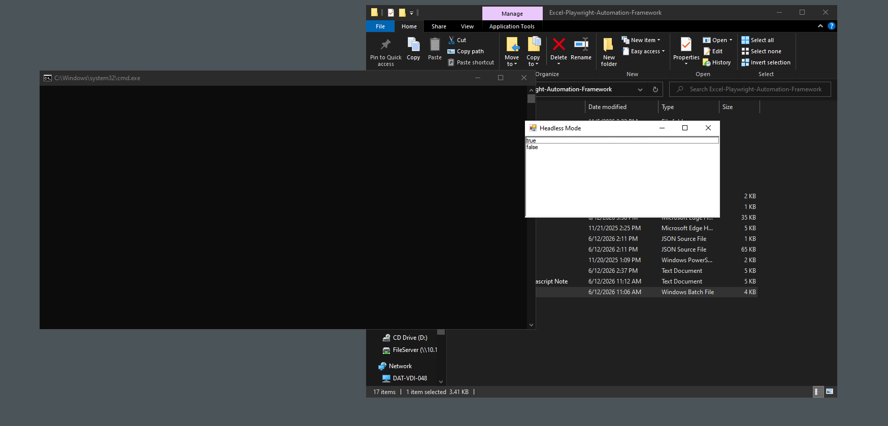
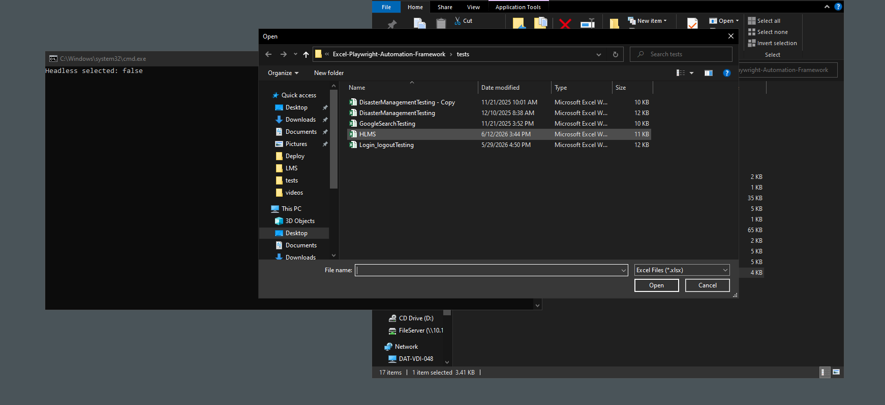
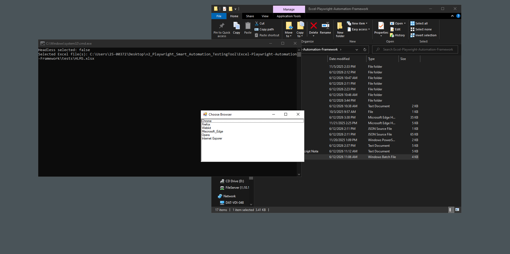
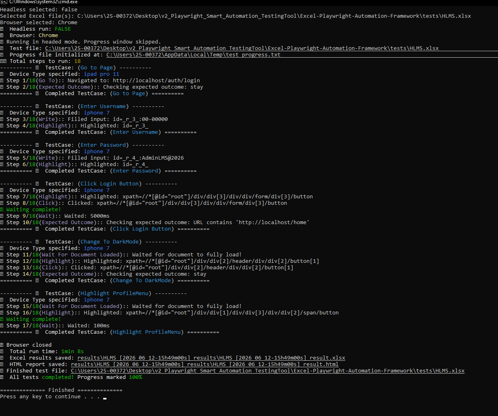

Framework Quick Start Manual
Selenium -> Playwright + ExcelBased and Custom reports
01 / 概要と目的 (Overview & Purpose)
Playwright スマート自動テストツールは、Microsoft Excelスプレッドシート（.xlsx）で定義されたテストシナリオを直接読み込み、フロントエンドの自動テストを実行する画期的なフレームワークです。従来のレガシーなSelenium構成から最新のPlaywrightアーキテクチャへと移行したことで、コアエンジンのコードを変更することなく、劇的な実行速度の向上、詳細なログ記録、状況に応じた柔軟な実行モードを実現しました。
| 機能・特徴 (Capability) | 従来のSelenium構成 | 新Playwrightスマートツール |
|---|---|---|
| 実行速度と負荷 | 動作が重く、ドライバーのオーバーヘッドが大きいため実行に時間がかかる。 | ⚡ 高速かつ軽量な非同期アーキテクチャを採用。 |
| 実行モード | 設定が硬直的であり、ヘッドレスモードへの切り替えが煩雑。 | 有頭（Headed）モードと無頭（Headless）モードを簡単に切り替えて実行可能。 |
| エラーハンドリング | スタックトレースが曖昧で、トラブルシューティングに多大な時間を要する。 | 分かりやすく、人間が直感的に理解できるエラーログを自動生成。 |
| テレメトリー・ログ | 基本的なアプリケーション例外の記録のみに限定。 | ブラウザ内部のコンソールログおよびネットワークログのディープキャプチャに対応。 |
| テスト仕様の定義 | スクリプトがハードコードされており、変更のたびにコードの修正が必要。 | Excelベースの管理マトリクスを採用。カスタム仕様に合わせて容易に変更・調整が可能。 |
| レポート機能 | 標準的なコンソール出力、または単純なテキストログのみ。 | スクリーンショットや実行タイムラインを内蔵した、視覚的で**高機能なカスタムレポート**を出力。 |
02 / 技術スタック構成 (Technical Stack Configuration)
本フレームワークは、システム全体への環境設定や複雑な環境構築を一切不要にする、ポータブルでクロスプラットフォームなコンポーネントを活用しています。スタンドアロン（独立型）アーキテクチャを採用したことで、すべての実行ランタイム依存関係がネイティブに内包されています。
| レイヤー | 使用技術 / エンジン | 主な役割と実用的なメリット |
|---|---|---|
| テストランナー | バッチスクリプト (.bat) | 自動化パイプラインを即座に実行できる、軽量でユーザーフレンドリーな「クリック＆ラン」のエントリーポイント（起動口）を提供します。 |
| 開発言語 | JavaScript (Node.js) | 非同期処理による高速なシナリオ実行と、イベント駆動型のデータ実行トラッキング（追跡）を実現します。 |
| レポートレイヤー | カスタムレポートエンジン | Excelレポート、HTMLダッシュボード、および人間が読みやすいユーザーフレンドリーなストリームログとエラー出力という、異なるチャネルへの検証データを同時に一元編集・出力します。 |
| テストデータストア | Excelベース形式 (.xlsx) | コアとなるプログラム要素（ドライバー）をテスト仕様書から切り離し、シンプルなシート内で視認性の高いステップスキーマを維持・管理できます。 |
| ブラウザドライバー | Edge, Chrome, Firefox, WebKit | 手動によるドライバーのバージョン同期問題を完全に解消。Playwrightが内部でマルチブラウザのコンテナ構成を自動制御します。 |
03 / ディレクトリ構成 (Directory Architecture)
本フレームワークは、機能ごとに明確に分離されたシンプルな設計になっています。環境構築用のポータブルな各種ツール、再利用可能なヘルパースクリプト、そしてテスト結果の出力先まで、直感的に把握・管理ができる構成です。
📂 EXCEL-PLAYWRIGHT-AUTOMATION-FRAMEWORK/ ├── 📄 dockerfile ├── 📄 ProgressWindow.ps1 // 有頭（Headed）モードの実行時に、進捗ウィンドウを表示するスクリプト ├── 📄 runner.bat // メイン実行バッチファイル（クリックするだけで即座に実行可能） ├── 📂 helpers/ // 共通・再利用可能なヘルパーコンポーネント │ ├── 📄 consoleLoading.js │ ├── 📄 generateAllure.js │ ├── 📄 generating_html-report.js │ ├── 📄 getImageSize.js │ ├── 📄 getTimestamp_YYYYMMDD_HHmmss.js │ ├── 📄 highlight.js │ ├── 📄 playwright_deviceProfile.js │ ├── 📄 readableError.js │ ├── 📄 runLog.js │ ├── 📄 screenResolusion.js │ └── 📄 wait.js ├── 📂 Installation_Setups/ // ポータブル環境構築用セットアップファイル群 │ ├── 📄 corepack │ ├── 📄 corepack.cmd │ ├── 📄 install_tools.bat │ ├── 📄 node.exe │ ├── 📄 nodevars.bat │ ├── 📄 npm │ ├── 📄 npm.cmd │ ├── 📄 npm.ps1 │ ├── 📄 npx │ ├── 📄 npx.cmd │ ├── 📄 npx.ps1 │ └── 📂 node_modules/ // Playwright本体および各種依存ライブラリ ├── 📂 results/ // 実行ごとのテスト結果ファイル出力先 │ └── 📂 HLMS_[2026_06_03-10h39m16s]_results/ │ ├── 📄 HLMS_[2026_06_03-10h39m16s]_result.html │ ├── 📄 HLMS_[2026_06_03-10h39m16s]_result.xlsx │ ├── 📄 HLMS_[2026_06_03-10h39m16s]_runLog.txt │ ├── 📂 downloads/ │ └── 📂 screenshots/ │ ├── 📄 Change_To_DarkMode_highlight.png │ ├── 📄 Change_To_DarkMode_page_url_stayed_same.png │ ├── 📄 Click_Login_Button_highlight.png │ ├── 📄 Click_Login_Button_page_url_matched.png │ ├── 📄 Enter_Password_highlight.png │ ├── 📄 Enter_Username_highlight.png │ ├── 📄 Go_to_Page_screenshot.png │ ├── 📄 Highlight_ProfileMenu_highlight.png │ └── 📄 Wait_For_Full_Document_screenshot.png ├── 📂 runner/ // メインのテスト実行制御ファイル │ └── 📄 runFromExcel.js └── 📂 tests/ // Excelベースのテスト仕様書（テストデータ） ├── 📄 DisasterManagementTesting - Copy.xlsx ├── 📄 DisasterManagementTesting.xlsx ├── 📄 GoogleSearchTesting.xlsx ├── 📄 HLMS.xlsx └── 📄 Login_logoutTesting.xlsx
04 / 実行ライフサイクルフロー (Operational Lifecycle Flow)
[フェーズ 1: 初期化パイプライン] 🚀 ダブルクリック: runner.bat │ └──▶ 📦 JavaScriptランナー読み込みエンジン パス: /runner/runFromExcel.js │ ▼ [フェーズ 2: 設定および実行環境チェック] 🎛️ 動的プロファイルインターセプター（判定オプション）: ├── 🛡️ UI実行モード設定: │ ├── ヘッドレス（Headless）選択時 ──▶ 🖥️ カスタムオーバーレイ表示 (ProgressWindow.ps1) │ └── 有頭（Headed）選択時 ──────▶ 🌐 ネイティブのChromium / WebKitインスタンスを起動 │ ├── 📂 対象ソースのマッピング: 単一のExcelファイルの指定、またはフォルダ内の再帰的スキャンに対応 │ └── 対象ソース例: /tests/HLMS.xlsx (仕様書データ) │ ├── 🌐 対象ブラウザコンテキスト: Chrome, Edge, Firefox, または Safari（エミュレータ） └── 📱 デバイスタイプの照合: 行マップから設定を読み込み、ビューポートやユーザーエージェント（UA）を即座に上書き │ ▼ [フェーズ 3: コア・ステップマトリクス実行ループ] 🔄 マトリクス解析ループ: Excelの行データを1行ずつ抽出して実行 │ ├── 🚀 ステップアクションの実行 (Go To,Write,Click,Highlightなど) │ └── 📝 リアルタイム・テレメトリー監視: ├── 🧾 ストリーミングコンソールログ ──▶ ターミナル上へのリアルタイムトレース出力 └── 🚨 エラーハンドラー ─▶ ブラウザの複雑なスタックエラーを人間が読みやすいテキストへ変換 │ ▼ [フェーズ 4: 成果物コンパイル＆レポート出力出力処理] 🏁 実行ターミナルのクローズ・終了処理 │ └──▶ 💾 出力先ディレクトリ: /results/ │ └──📂 [テストファイル名]_[YYYY_MM_DD-HHhmms]_results/ ├── 📂 /downloads/ // 実行中に生成・ダウンロードされた各種バイナリデータ ├── 📂 /screenshots/ // キャプチャ画像（対応するテストケースのキー名で保存） ├── 📄 [テストファイル名]_[タイムスタンプ]_result.html // カスタムWebダッシュボード ├── 📄 [テストファイル名]_[タイムスタンプ]_result.xlsx // 結果スタンプ適用済みのExcelマトリクス └── 📄 [テストファイル名]_[タイムスタンプ]_runLog.txt // 集約されたトレースタイムラインログ
05 / Excel行スキーマのプロパティ定義 (Excel Row Schema Properties)
本自動化エンジンは、以下に定義されたカラムヘッダー（列名）および構文検証ルールに基づき、Excelシートからテストステップを動的に読み込み、解釈・実行します。
📋 1. 列キーと対応するアクションタイプ (Column Keys & Supported Actions)
コアエンジンは、テストシートのヘッダーに指定された以下の正確な列名に基づいて、各行のマッピングを行います。
| 主要ヘッダー名 | データ型 | アプリケーション内での役割 / 有効なキーワード |
|---|---|---|
| ActionType Keys | String |
Go To
Write
Keyboard
Click
Select
SelectButton
Download
Highlight
Outline Color
ScreenShot
Wait
Wait For Document Loaded
|
| Expected Outcome | String | レポート追跡（アサーション）用に対象の検証テキスト、または期待される状態条件を定義します。 |
| Device Type | String | 対象ブラウザのレスポンシブ実行レイアウト幅のルール、およびユーザーエージェント（UA）文字列を制御します。 |
⚙️ 2. セレクター接頭辞（Prefix）の解析ルール (Selector Prefix Parsing Rules)
ランナーは、接頭辞の解析ロジックを介して、スプレッドシート内の文字列をPlaywrightネイティブのCSS/XPathロケーターに変換します。
| Excel内での記述構文 | 解析後の出力結果 | 対象マッチャーのコンテキスト・補足 |
|---|---|---|
| text=Submit | text=Submit | 要素内のテキストコンテンツを直接マッピングします。 |
| id=username | #username | 標準的なCSSの要素IDセレクター（#）に変換されます。 |
| name=email | [name="email"] | フォーム要素等のname属性ブロックに変換されます。 |
| type=button | [type="button"] | コンポーネントのtype属性記述を対象にクエリを行います。 |
| class=btn-primary | .btn-primary | 標準的なCSSのクラスセレクター（.）表現に変換されます。 |
| placeholder=Enter ID | [placeholder="Enter ID"] | 入力フォームのプレースホルダー文字列を直接マッピングします。 |
| xpath=//div[@id='app'] | //div[@id='app'] | 接頭辞を除去し、XMLパス（XPath）をそのままネイティブに渡します。 |
| fullxpath=//body/div/form | xpath=//body/div/form | 絶対パス表現の明示的なツリー構造を、正確なXPathセレクターに変換します。 |
📱 3. デバイスエミュレーション・マッピングマトリクス (Device Emulation Mappings)
本プラットフォームはレスポンシブレイアウトのシミュレーションに対応しています。シートの Device Type
列に、以下の検証済みプロファイルキーのいずれかを指定してください。
- desktop chrome
- desktop chrome hidpi
- desktop firefox
- desktop safari
- desktop edge
- galaxy a55
- galaxy s24
- galaxy s9+
- galaxy s8 / s5
- galaxy note 3 / 2
- galaxy tab s4
- iphone 15 pro max
- iphone 14 / 13 / 12
- iphone x / xr / se
- ipad pro (カスタムCSSスケール)
- ipad (gen 11 / 7 / 6)
- ipad mini
- pixel 7 / 5 / 4 / 3
- pixel 2 xl
- nexus 7 / 6p / 5x / 4
- blackberry z30 / playbook
- microsoft lumia 950
- nokia lumia 520 / n9
* 任意のモバイルデバイス名の末尾に landscape
を付与すると、エミュレーションのコンテキストフレームが横向き（ランドスケープ）に傾けられます（例: galaxy a55 landscape）。
06 / エンドツーエンド 運用ウォークスルー
テスト実行のライフサイクルを視覚的に解説します。設定から成果物（レポート）の生成まで、データがどのように処理されるかをステップ順に追跡します。
テストケース・シート（マトリクス）の入力
フレームワークは、指定されたスプレッドシートのスキーマからワークフローをマッピングします。各行は、明示的なステップキーワード（例：
Go To,
Write,
Click,
Highlight）
に従って実行指示として解釈され、Device Type 列で定義されたレスポンシブなビューポート設定と連動します。
バッチファイルによるパイプラインの初期化
ワークスペースのルートディレクトリにある runner.bat
をダブルクリックしてシステムを起動します。これによりコマンドラインラッパーが立ち上がり、ポータブルな Node.js 実行環境が即座に初期化されます。
UIモード、ファイルマッピング、ブラウザエンジンの選択ダイアログ
起動スクリプトを実行すると、対話形式のメニュープロンプトが表示され、以下の3つの設定を順番に選択します：



テストの実行とデバイスビューポートのシミュレーション
自動化エンジンがマトリクスから1行ずつテストを抽出し、指定のステップ条件を評価しながら、各デバイスごとのレイアウト制限をリアルタイムに適用します。ビューポートは、設定されたモバイルまたはデスクトップのプロファイル（例：ipad pro 11
など）に合わせて自動的にスケーリングされます。

実行履歴ログ（テキスト形式トレース）の自動生成
詳細な実行ログファイル（..._runLog.txt）が、タイムスタンプ付きの出力フォルダ内に自動保存されます。実行された手順、ターゲットとなった文字列、ブラウザの操作履歴、および経過時間が精緻に記録されます。
実行結果フォルダ（成果物パッケージ）の集約
テストが完了すると、フレームワークは /results/
ディレクトリ配下に日時別のフォルダを作成します。キャプチャ画像、ダウンロードファイル、および複数のレポート形式がパッケージ化されて整理されます。
ブラウザコンソール・ログのエラー追跡
システムはブラウザのネットワークストリームを監視し、実行中に発生した内部コンソールのエラー、警告、およびログ情報を捕捉して、テレメトリ用の専用データタブに分離して書き出します。
テスト結果付き Excelマトリクスシートの書き出し
テスト実行ランナーは、各ステップの成否ステータスを元の入力テンプレートのコピーに直接スタンプし、結果検証用の統合Excelファイル（..._result.xlsx）として保存します。

インタラクティブ HTMLレポートダッシュボード
ウェブベースのレポーター機能により、実行メタデータ、インタラクティブなナビゲーションタブ、ステップ概要、ハイライトされたスクリーンショットメディア、低レベルAPIの測定指標を1ファイルに統合したダッシュボードレポートが生成されます。